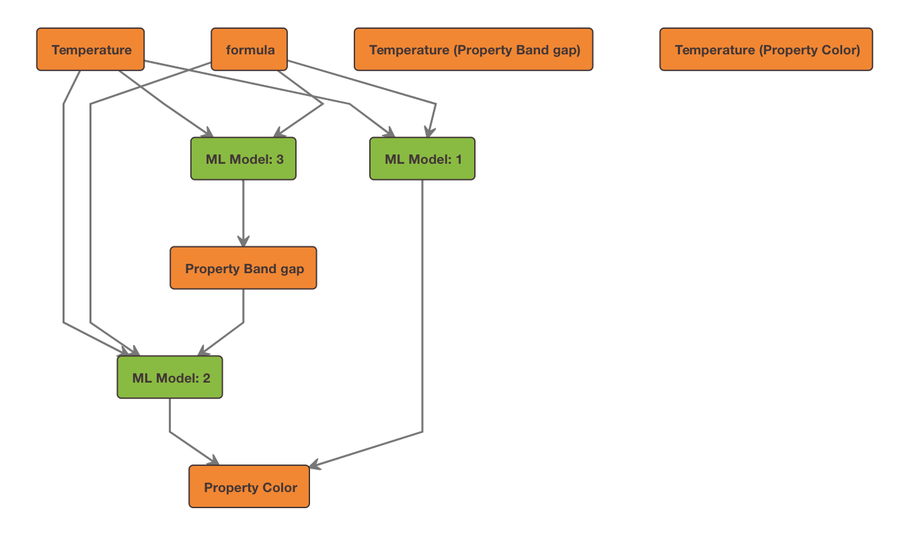
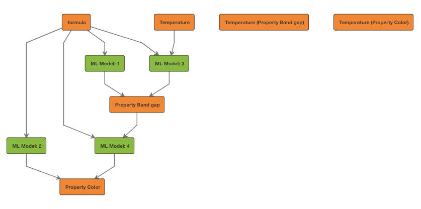

Data Views Client¶
The DataViewsClient is the section of PyCC that allows you to manage your
data views on Citrination. To access the data views client, instantiate
CitrinationClient and read the data_views attribute, or just import
the DataViewsClient and instantiate it directly:
from citrination_client import CitrinationClient
from os import environ
client = CitrinationClient(environ["CITRINATION_API_KEY"], environ["CITRINATION_SITE"])
data_views_client = client.data_views
# Alternatively, import and instantiate the data views client directly
from citrination_client.views.client import DataViewsClient
data_views_client = DataViewsClient(
environ["CITRINATION_API_KEY"], environ["CITRINATION_SITE"]
)
Descriptor Keys¶
If you know the dataset identifier, but do not know the descriptor names, you can use the
SearchTemplateClient#get_available_columns to get the descriptor keys.
Alternatively, you can use the DataViewsClient, as an instance of the
SearchTemplateClient is present on the DataViewsClient via client.search_template.
from citrination_client.views.client import DataViewsClient
from os import environ
# Note: for the purposes of this example, environ["CITRINATION_SITE"] is
# https://citrination.com
client = DataViewsClient(environ["CITRINATION_API_KEY"], environ["CITRINATION_SITE"])
# Get an array of descriptor keys for dataset id 1160
dataset_ids = ['1160']
descriptor_keys = client.search_template.get_available_columns(dataset_ids)
print(descriptor_keys)
# ['formula',
# 'Property Lasing',
# 'Temperature (Property Lasing)',
# 'Property Electroluminescence',
# 'Temperature (Property Electroluminescence)',
# 'Property Temperature derivative of band gap',
# 'Temperature (Property Temperature derivative of band gap)',
# 'Transition (Property Temperature derivative of band gap)',
# 'Electric field polarization (Property Temperature derivative of band gap)',
# 'Property Phase',
# 'Property Photoluminescence',
# 'Temperature (Property Photoluminescence)',
# 'Property Thermoluminescence',
# 'Temperature (Property Thermoluminescence)',
# 'Property Morphology',
# 'Property Mechanical luminescence',
# 'Temperature (Property Mechanical luminescence)',
# 'Property Cathodoluminescence',
# 'Temperature (Property Cathodoluminescence)',
# 'Property Band gap',
# 'Temperature (Property Band gap)',
# 'Transition (Property Band gap)',
# 'Electric field polarization (Property Band gap)',
# 'Property Crystallinity',
# 'Property Color',
# 'Temperature (Property Color)']
Creating a View¶
The DataViewsClient allows you to create a machine learning configuration which in turn can be used
to make a data view via the API. A builder is provided to simplify creating ML configurations.
Once you have a data view id, you can use that id in the ModelsClient to run predictions or design.
Creating Model Configuration for Your Data¶
The DataViewsClient#create_ml_configuration_from_datasets method will create
a configuration object for you, suitable for passing into the create or
update methods. While the configuration object returned might contain more
descriptors than you want, it’s a great starting point, and can easily be modified
to suit your needs.
By passing in the dataset ids that you’re interested in, Citrination will determine
(within limitations) which descriptor keys (properties, conditions,
process steps, and process step details) are present in those datasets.
It will then do some analysis of that data, and suggest descriptor and
role configurations for each of those descriptor keys, returning back to
you a dictionary that can be used to create or update a view.
from citrination_client.views.client import DataViewsClient
from os import environ
# Note: for the purposes of this example, environ["CITRINATION_SITE"] is
# https://citrination.com
client = DataViewsClient(environ["CITRINATION_API_KEY"], environ["CITRINATION_SITE"])
dataset_ids = ['1160']
# Get the ml config defaults for all descriptor keys in the datasets
data_view_config = client.create_ml_configuration_from_datasets(dataset_ids)
print(data_view_config)
# {
# "dataset_ids": [
# 1160
# ],
# "group_by": [],
# "model_type": "default",
# "descriptors": [
# {
# "category": "Real",
# "descriptor_key": "Temperature (Property Thermoluminescence)",
# "units": "",
# "lower_bound": 0,
# "upper_bound": 1746
# },
# {
# "category": "Categorical",
# "descriptor_key": "Property Crystallinity",
# "descriptor_values": [
# "Single crystalline",
# "Polycrystalline",
# "Amorphous"
# ],
# "finite_set": True
# },
# ...
# (truncated for documentation)
# ...
# ],
# "builder": "simple",
# "roles": {
# "Temperature (Property Thermoluminescence)": "input",
# "Property Temperature derivative of band gap": "output",
# "Property Crystallinity": "output",
# "Electric field polarization (Property Band gap)": "input",
# ...
# (truncated for documentation)
# ...
# }
# }
At this point, we have a configuration object with all of the descriptors that
could be created from the datasets we selected. Suppose we are only interested in
formula, band gap, color, and some related temperature conditions.
We can modify the existing configuration object to filter it down to those
descriptors and roles.
descriptor_keys = [
'formula',
'Property Band gap',
'Property Color',
'Temperature (Property Band gap)',
'Temperature (Property Color)'
]
data_view_config['descriptors'] = list(
filter(
lambda d: d['descriptor_key'] in descriptor_keys,
data_view_config['descriptors']
)
)
data_view_config['roles'] = {
key: data_view_config['roles'][key] for key in descriptor_keys
}
This dictionary has now been pared down to only the descriptors we are interested in. It can now be modified further, or used to create/update a view.
print(data_view_config)
# { 'dataset_ids': ['1160'],
# 'group_by': [],
# 'model_type': 'default',
# 'descriptors': [
# {
# 'category': 'Real',
# 'descriptor_key': 'Temperature (Property Band gap)',
# 'units': '',
# 'lower_bound': 0.0,
# 'upper_bound': 1946.0
# }, {
# 'category': 'Categorical',
# 'descriptor_key': 'Property Color',
# 'descriptor_values': [
# 'Yellow', 'Pale Yellow', 'Violet', 'Gray', 'Amber', 'Orange-Red',
# 'Dark Brown', 'Red', 'Blue', 'White', 'Red-Yellow', 'Brown',
# 'Black', 'Ocher', 'Bluish', 'Bronze', 'Light Gray', 'Dark Green',
# 'Yellow-White', 'Copper-Red', 'Brown-Black', 'Yellow-Orange',
# 'Orange', 'Dark Gray', 'Dark Red'
# ],
# 'finite_set': True
# }, {
# 'category': 'Real',
# 'descriptor_key': 'Temperature (Property Color)',
# 'units': '',
# 'lower_bound': 0.0,
# 'upper_bound': 1746.0
# }, {
# 'category': 'Real',
# 'descriptor_key': 'Property Band gap',
# 'units': '',
# 'lower_bound': 0.0,
# 'upper_bound': 29.0
# }, {
# 'category': 'Inorganic',
# 'descriptor_key': 'formula',
# 'threshold': 1.0
# }
# ],
# 'builder': 'simple',
# 'roles': {
# 'formula': 'input',
# 'Property Band gap': 'output',
# 'Property Color': 'output',
# 'Temperature (Property Band gap)': 'input',
# 'Temperature (Property Color)': 'input'
# }
# }
# Create a data view
data_view_id = client.create(
data_view_config, 'My dataview name', 'The data view description'
)
# Or update an existing data view
client.update(data_view_id, data_view_config)
Using the DataViewBuilder¶
Under the hood, the DataViewsClient#create_ml_configuration_from_datasets method
leverages the DataViewBuilder to create a configuration object. This class
can also be used to build your own configuration object from scratch, by providing
dataset ids and descriptors.
This path can be quicker than using the DataViewsClient#create_ml_configuration_from_datasets
method in an automated workflow if you already know the descriptors that you want to use.
When building data views through the UI, or using the configuration object returned
from the DataViewBuilder, the roles of each of those descriptors are
interpreted by Citrination, and the machine learning libraries determine how
many models to generate, and how to apply your inputs, outputs, and latent variables.
from citrination_client import CategoricalDescriptor, InorganicDescriptor, RealDescriptor
from citrination_client.views.data_view_builder import DataViewBuilder
from citrination_client.views.client import DataViewsClient
from os import environ
# Note: for the purposes of this example, environ["CITRINATION_SITE"] is
# https://citrination.com
client = DataViewsClient(environ["CITRINATION_API_KEY"], environ["CITRINATION_SITE"])
dv_builder = DataViewBuilder()
dv_builder.dataset_ids([1160])
colors = [
'Yellow', 'Pale Yellow', 'Violet', 'Gray', 'Amber', 'Orange-Red', 'Dark Brown',
'Red', 'Blue', 'White', 'Red-Yellow', 'Brown', 'Black', 'Ocher', 'Bluish',
'Bronze', 'Light Gray', 'Dark Green', 'Yellow-White', 'Copper-Red',
'Brown-Black', 'Yellow-Orange', 'Orange', 'Dark Gray', 'Dark Red'
]
dv_builder.add_descriptor(
InorganicDescriptor('formula'), 'input'
)
dv_builder.add_descriptor(
RealDescriptor('Temperature (Property Band gap)', '0.0', '1946.0'), 'input'
)
dv_builder.add_descriptor(
RealDescriptor('Temperature (Property Color)', '0.0', '1946.0'), 'input'
)
dv_builder.add_descriptor(
RealDescriptor(u'Property Band gap', '0.0', '29.0'), 'latentVariable'
)
dv_builder.add_descriptor(
CategoricalDescriptor(u'Property Color', colors), 'output'
)
# Converts the DataViewBuilder instance to a dictionary "config" object
data_view_config = dv_builder.build()
# Create a data view
data_view_id = client.create(
data_view_config, 'My dataview name', 'The data view description'
)
# Or update an existing data view
client.update(data_view_id, data_view_config)
The following relation graph was generated from the sample code above:
{kind=link}
Using the AdvancedDataViewBuilder¶
For the data view generated in the DataViewBuilder example above, specifying:
formula, Temperature (Property Band gap), and Temperature (Property Color) as
inputs,Property Band gap as a
latentVariable, andProperty Color as an
output,
resulted in 3 models being generated, represented by the following relations:
[
{
'inputs': [
'formula',
'Temperature (Property Band gap)'
],
'output': 'Property Band gap'
}, {
'inputs': [
'formula',
'Temperature (Property Color)'
],
'output': 'Property Color'
},{
'inputs': [
'formula',
'Temperature (Property Band gap)',
'Property Band gap'
],
'output': 'Property Color'
},
]
The AdvancedDataViewBuilder gives you the freedom to specify the relations
between all of your descriptors. Building on the DataViewBuilder example,
say we want to have the following relations build a system of 4 models for our
data view, instead of the 3 models that were created when we used the DataViewBuilder:
[
{
'inputs': ['formula'],
'output': 'Property Band gap'
}, {
'inputs': ['formula', 'Temperature (Property Band gap)'],
'output': 'Property Band gap'
}, {
'inputs': ['formula'],
'output': 'Property Color'
},{
'inputs': ['formula', 'Property Band gap'],
'output': 'Property Color'
},
]
In this case, the role of each descriptor is essentially the same as before,
but applied in a different model configuration.
Similar to the DataViewBuilder, the AdvancedDataViewBuilder requires
descriptors. In this example, we’ll select the descriptor dictionaries that
we are interested in from an auto-generated config object, similar to what is
shown in the Creating Model Configuration for Your Data section.
from citrination_client.views.advanced_data_view_builder import AdvancedDataViewBuilder
from citrination_client.views.client import DataViewsClient
from os import environ
# Note: for the purposes of this example, environ["CITRINATION_SITE"] is
# https://citrination.com
client = DataViewsClient(environ["CITRINATION_API_KEY"], environ["CITRINATION_SITE"])
dataset_ids = ['1160']
# Get the ml config defaults for all descriptor keys in the datasets
data_view_config = client.create_ml_configuration_from_datasets(dataset_ids)
descriptor_keys = [
'formula',
'Property Band gap',
'Property Color',
'Temperature (Property Band gap)',
'Temperature (Property Color)'
]
descriptors = list(
filter(
lambda d: d['descriptor_key'] in descriptor_keys,
data_view_config['descriptors']
)
)
Next, we initialize the AdvancedDataViewBuilder, add the descriptors via
the #add_raw_descriptor method, and then add relations via the
#add_relation method.
advanced_builder = AdvancedDataViewBuilder()
advanced_builder.dataset_ids(dataset_ids)
for descriptor in descriptors:
advanced_builder.add_raw_descriptor(descriptor)
advanced_builder.add_relation(['formula'], 'Property Band gap')
advanced_builder.add_relation(['formula'], 'Property Color')
advanced_builder.add_relation(['formula', 'Temperature (Property Band gap)'], 'Property Band gap')
advanced_builder.add_relation(['formula', 'Property Band gap'], 'Property Color')
At this point, the advanced data view builder object is ready to be used to create or update a data view.
advanced_config = advanced_builder.build()
# Create a data view
data_view_id = client.data_views.create(
advanced_config, 'My dataview name', 'The data view description'
)
# Or update an existing data view
client.update(data_view_id, advanced_config)
Checking out the resulting relation graph, we can see that 4 models have been generated.
{kind=link}
Retrieving Model Reports¶
The get_model_reports method allows you to fetch a subset of the model reports
data as JSON that one would normally see through the UI.
The following code snippet is using model reports from https://citrination.com/data_views/524/data_summary
from citrination_client.views.client import DataViewsClient
from os import environ
# Note: for the purposes of this example, environ["CITRINATION_SITE"] is
# https://citrination.com
client = DataViewsClient(environ["CITRINATION_API_KEY"], environ["CITRINATION_SITE"])
reports = client.get_model_reports(524)
print([str(report) for report in reports])
# ["<ModelReport model_name='Crystallinity'>",
# "<ModelReport model_name='Color'>",
# "<ModelReport model_name='Band gap'>"]
# Crystallinity is a Categorical output
print(reports[0].performance)
# {'ndme_f1': 0.7513840971831497}
print(reports[0].model_settings)
# {'Algorithm': 'Ensemble of non-linear estimators',
# 'Maximum tree depth': 30,
# 'Minimum samples per leaf': 1,
# 'Number of cross-validation folds': 3,
# 'Number of estimators': 194}
print(reports[0].feature_importances)
# [{'name': 'mean of Non-dimensional work function for Chemical formula',
# 'value': 0.016694057309452427},
# {'name': 'mean of DFT volume ratio for Chemical formula',
# 'value': 0.02425121569638139},
# {'name': 'mean of Non-dimensional liquid range for Chemical formula',
# 'value': 0.024088896494558795},
# {'name': 'mean of Radius of d orbitals for Chemical formula',
# 'value': 0.018493567944483043},
# ...
# ]
# Band Gap is a Real output, hence why it may have different keys
print(reports[2].performance)
# {'ndme': 0.35374524040321054,
# 'ndme_stderr': 0.008224021869691423,
# 'rmse': 0.8023624551013153,
# 'rmse_stderr': 0.018653668302790923,
# 'uc_fraction': 0.5793304221251819,
# 'uc_rmsse': 1.9191506842755264}
print(reports[2].model_settings)
# {'Algorithm': 'Ensemble of non-linear estimators',
# 'Leaf model': 'Mean',
# 'Maximum tree depth': 30,
# 'Minimum samples per leaf': 1,
# 'Number of cross-validation folds': 3,
# 'Number of estimators': 148,
# 'Uses jackknife method of uncertainty estimation': True}
print(reports[2].feature_importances)
# [{'name': 'mean of Non-dimensional work function for Chemical formula',
# 'value': 0.04867717383587202},
# {'name': 'mean of DFT volume ratio for Chemical formula',
# 'value': 0.008961689534579438},
# {'name': 'mean of Non-dimensional liquid range for Chemical formula',
# 'value': 0.006946688158984557},
# ...
# ]
Retrieving Relation Graphs¶
A relation graph shows you how your inputs, outputs, and latent variables are linked by Citrination’s machine learning models.
The get_relation_graph method returns a dict containing nodes and edges
intended to be passed to the plot function from the dagre_py.core module.
from citrination_client.views.client import DataViewsClient
from dagre_py.core import plot
from os import environ
# Note: for the purposes of this example, environ["CITRINATION_SITE"] is
# https://citrination.com
client = DataViewsClient(environ["CITRINATION_API_KEY"], environ["CITRINATION_SITE"])
# Example using https://citrination.com/data_views/12329/data_summary
# Returns a dict containing `nodes` and `edges`
relation_graph = client.get_relation_graph(12329)
print(relation_graph)
# {'edges': [{'source': 'formula', 'target': 'ML Model: 1'},
# {'source': 'ML Model: 1', 'target': 'Property Bulk modulus'}],
# 'nodes': [{'attributes': {'style': {'fill': '#ff8200', 'stroke': '#453536'}},
# 'description': 'Featurized to: \n'
# '-- mean of Packing density\n'
# '-- mean of Liquid range\n'
# '...', (truncated for documentation purposes)
# 'label': 'formula'},
# {'attributes': {'style': {'fill': '#ff8200', 'stroke': '#453536'}},
# 'description': 'Error Metrics\n'
# '- Root mean squared error (GPa) (0.0 for a '
# 'perfect model) = 50.427349\n'
# '- Uncertainty calibration: root mean square of '
# 'standardized errors (1.0 is perfectly calibrated) '
# '= 2.069455\n'
# '...', (truncated for documentation purposes)
# 'label': 'Property Bulk modulus'},
# {'attributes': {'style': {'fill': '#78be20', 'stroke': '#453536'}},
# 'description': 'Model Type: Lolo\nSample Count: 30\n',
# 'label': 'ML Model: 1'}]}
# Uses ``dagre_py`` to create a visualization of the relation graph in jupyter.
# See screenshot below.
plot(relation_graph)
{kind=link}
Formulations Views¶
A new method was added to the base class used by both the normal DataViewBuilder and the AdvancedDataViewBuilder, that
simplifies the configuration setup for formulation views.
add_formulation_descriptor will use the passed in data views client to automatically add the shares, component type
and the name descriptors. This requires that the dataset_ids have already been set.
client = CitrinationClient(environ["CITRINATION_API_KEY"])
builder = DataViewBuilder()
builder.dataset_ids([187195])
formulation_desc = FormulationDescriptor("Formulation (idealMassPercent)")
builder.add_formulation_descriptor(formulation_desc, client.data_views)
Ingredient Properties in AdvancedDataViewBuilder¶
When defining ingredient level properties using the AdvancedDataViewBuilder, you will need
to define a relation with all ingredient properties as inputs to the formulation descriptor itself.
#Add ingredient level property relations
advanced_builder.add_relation(['Property pigment red',
'Property pigment green',
'Property pigment blue'],
'Formulation (idealMassPercent)')